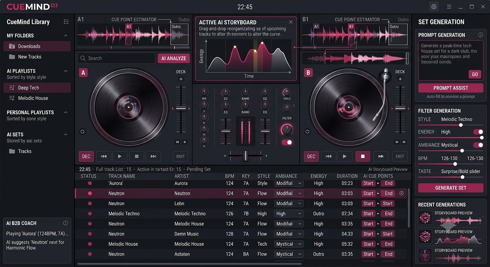

En développement
CueMind DJ
Application web pour DJs : bibliothèque musicale, génération de sets par IA, mode back-to-back assisté avec notes de transition, playlists par style et préparation de performances.
Next.jsTypeScriptReactIAAPI REST
